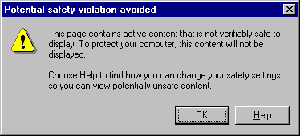
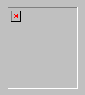
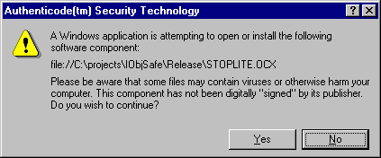
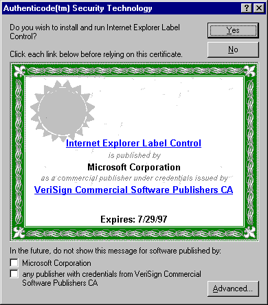
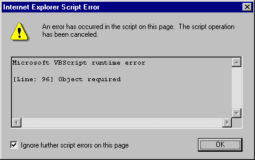
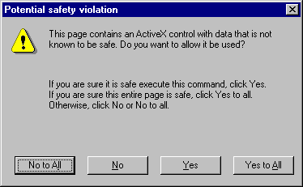
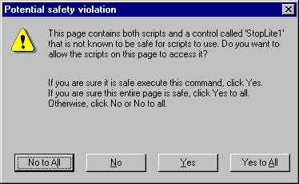

|
| ||
|
| ||
Paul Johns
Development Technology Engineer
October 15, 1996
If you've used unsigned or unmarked ActiveX controls with Microsoft Internet Explorer 3.0, you may have gotten dialog boxes telling you that the control is not signed, the control is not safe for initializing, or the control is not safe for scripting. Or, if you set your security level to high rather than medium, the control did not load or display at all. (Thrill-seekers who set security at none won't get any of these behaviors. But they won't have any security, either!)
Well, you can have your security and use your controls, too! This article tells you how to get rid of those dialog boxes without setting your security level to none. The issue is especially important because Microsoft Internet Explorer defaults to the high security setting.
These behaviors happen because of Internet Explorer's security mechanisms for ActiveX controls. The ActiveX controls you can automatically download over the Internet can do anything -- including things that would damage your system. Java attempts to solve this problem by severely limiting what a Java applet can do. It can't, for instance, access the client computer's file system. ActiveX controls take a different approach: they demand positive identification of the author of the control, verify that the control hasn't been modified since it was signed, and identify safe controls -- kind of like shrink-wrapping a control for download over the Internet. Because of this approach, ActiveX controls can use the full power of the client's system safely.
If a user attempts to load a Web page that uses a control not already registered on the user's system, Internet Explorer will download the control. But before it does, the browser checks to see if the control has been digitally signed. If not, and security is set at high, the following dialog box appears:

And the following appears in the Web page instead of the control:

Note that at high security, there is no option to use the control.
If security is set to medium, the following dialog box appears:

If the user clicks yes, the control installs itself normally. If the user clicks no, an error placeholder appears instead of the control, the same as appears with the high security setting.
If security is set at none, the control works and no dialog box appears.
Once the control is registered on the user's system, the control no longer invokes code-signing dialog boxes. After a control is installed, it is considered safe even if it was not signed originally .
If a control is signed, a certificate dialog box appears, displaying information intended to help users decide whether to trust the author of the control.

Note the checkboxes at the bottom. When the user checks either box, controls signed by those sources will download with no further interruption. (For software published by individual developers, only the first checkbox is available with Internet Explorer version 3.01.)
Once the control is installed, Internet Explorer 3.0 won't check it again to see if it's signed. However, before your Web page initializes the control, Internet Explorer 3.0 will verify that the control is marked as safe for initializing, and, if your Web page scripts the control, whether that control is marked as safe for scripting.
If the control passes both checks, it loads and runs. If it fails either check, one of three things will happen:
If security is set on high, you'll get the same "Potential safety violation avoided" dialog as if the control were being installed and hadn't been signed. The control will display and will run, but without initialization and without scripting. Since the control won't be initialized, it will use default values for its persistent properties. Also, if any script refers to the control, the script will fail, displaying a dialog box similar to the following:

If security is set to medium, the user gets one dialog box for each security check. First, Internet Explorer 3.0 will check to see if the control is safe for initializing. If it's not, the browser will display the following dialog box:

If the user selects either of the No buttons, the affected control(s) will not be initialized; they will use default values for their persistent properties.
Next, Internet Explorer 3.0 checks to see if the control is safe for scripting. If not, it displays a dialog box similar to the following:

If the user selects either No button, any script that refers to an affected control will fail, displaying a dialog box similar to the one in the high security instance above.
If security is set to none, everything just works.
To sign your control, you'll need to obtain a certificate from a Certificate Authority such as VeriSign™. Find directions from VeriSign at http://digitalid.verisign.com/codesign.htm  .(This link points to a server not under the control of Microsoft Corporation. Please read our disclaimer
.(This link points to a server not under the control of Microsoft Corporation. Please read our disclaimer  before continuing.)
before continuing.)
There are two classes of digital IDs for Authenticode™ technology. Class 2 certificates, for individuals who publish software, cost US$20 per year and require that you provide your name, address, e-mail address, date of birth, and Social Security Number. After VeriSign verifies this information, you will be issued a certificate.
Class 3 certificates, for commercial software publishers, cost US$400 per year and require a Dun-and-Bradstreet rating in addition to company name, location, and contacts.
Once you obtain the certificate, use the SIGNCODE program provided with the ActiveX SDK to sign your code. Note that you'll have to re-sign code if you modify it (such as to mark it safe for initializing and scripting). Note also that signatures are only checked when the control is first installed -- the signature is not checked every time Internet Explorer uses the control.
Once your code is signed, even users whose security setting is high will be able to download, install, and register your controls. But they will only be able to use pages that initialize and script these signed controls if you mark them as safe for initializing and safe for scripting.
Most companies should have one certificate and one group responsible for signing code so that they have control over what's signed. If your company does, follow its procedure, rather than signing the control yourself.
So you've got your control signed -- but you still get the safety dialog boxes shown above in the section "What happens if you don't mark your control?" How do you get rid of these dialogs so that your users will have a seamless browsing experience?
Simple. Mark your control as safe for initialization and safe for scripting. But only do this if you know the control is actually safe.
Read this section carefully -- this is a serious issue.
Since the marking stays with the control rather than with the Web page, controls marked as safe have to be safe in all possible Web pages. So a control marked as safe has to be written to protect itself from any unpleasant thing a Web page author might do in either initializing or scripting the control. While it's fairly simple to verify that a particular control is safe when used with a particular Web page, it's far from trivial to verify that the control will always be safe with any Web page.
If you mark your control as safe for initializing, you are asserting that no matter what values are used to initialize your control, it won't do anything that would damage a user's system or compromise the user's security.
If you mark your control as safe for scripting, you are asserting that your control won't do anything to damage a user's system or compromise the user's security regardless of how your control's methods and properties are manipulated by the Web page's script. In other words, it has to accept any method calls (with any parameters) and/or property manipulations in any order without doing anything bad.
Does this scare you a little? When I was writing the StopLite control, it sure did scare me -- so I took extra care to ensure that my control was in fact safe before I marked it as safe. For instance, I verified that StopLite:
This list of do's and don'ts isn't complete, but it's a good start. If you find any security problems with StopLite, please let me know via our feedback link at the bottom of this page.
It is very important never to mark a control safe that isn't actually safe, as tempting as this might be (if, for instance, you don't have the source code for a control.) Once marked safe, the control will be considered safe by all Web pages, regardless of what the page might actually do to the control. (As of this writing, there is no way to sign a Web page nor mark it as safe; nor is there any way to specify that a control is only marked as safe with certain Web pages.)
A simple and safe alternative to marking unsafe controls as safe is to write a new safe control that subclasses the unsafe control. Just ensure that your new control's initialization, methods, and properties are safe.
You can mark a control as safe in two basic ways:
Each method has advantages and disadvantages.
Implementing IObjectSafety allows your control to have a safe mode and an unsafe mode -- a spreadsheet control, for instance, could both read and write files when it's in unsafe mode, but perhaps only read from files when it's in safe mode. This would allow the control to be used in very powerful ways when safety wasn't important but still be safe for use in a Web page. Using IObjectSafety also allows a container to determine whether an already-created control is safe without accessing the registry, which can make your control come up faster. Finally, controls that implement IObjectSafety can be safe on some interfaces and unsafe on others, since safety is on an interface-by-interface basis.
Adding the entries to the registry has the theoretical advantage that a container could check the registry to see if a control is safe before instantiating it. (Checking the registry is expensive, but instantiating controls is even more expensive.) For instance, when an authoring environment such as the ActiveX Control Pad or Visual Basic showed you a list of controls you could insert, it could also indicate which controls were safe and which weren't. (This is a theoretical advantage because neither environment currently does this.) If the entries weren't in the registry, the authoring environment would have to instantiate the control in order to use IObjectSafety.
Because ActiveX controls must be able to register and unregister themselves using DllRegisterServer and DllUnregisterServer, you'll want to do the registry manipulation in your control's code rather than in a setup program.
There is one situation in which you might want to add the entries to the registry using a setup program or .REG file -- when you know the control is safe, but you can't modify the control itself. As mentioned above, we do not recommend this unless you're sure the control is actually safe. (But you can always create a new control that safely subclasses the unsafe control.) If you use this method to mark controls that are automatically installed by Internet Explorer 3.0, you'll need to install your control using an .INF file rather than just supplying the control's executable file.
The added code necessary to implement IObjectSafety is about the same size as the code to implement self-registration -- less than 1K. So from a size perspective, it doesn't matter which you use.
If your control is always safe, it is possible to use both methods. Using both gives you the best performance, both in secure containers and in authoring environments that check for safety (although no such authoring environments exist as of this writing) but makes your control grow roughly an additional 1K.
If your control has both safe and unsafe modes, or is only safe on some of its interfaces, you should only implement IObjectSafety -- do not add the registry keys, because they imply that your control is always safe on all interfaces. Also, remember that implementing IObjectSafety will give better runtime performance.
You can add the necessary keys to mark the control in the registry either when you install the control or later.
The two keys you need are both of the following form:
\HKEY_LOCAL_MACHINE\SOFTWARE\Classes\CLSID\<GUID of control class>\Implemented Categories\<GUID of category>
The ActiveX SDK header file ObjSafe.H defines the GUID values for CATID_SafeForInitializing and CATID_SafeForScripting..
Since for StopLite, the class GUID is {20048BB3-DB68-11CF-9CAF-00AA006CB425}, the two keys we add are:
REGEDIT4
[HKEY_CLASSES_ROOT\CLSID\{20048BB3-DB68-11CF-9CAF-00AA006CB425}\Implemented Categories]
[HKEY_CLASSES_ROOT\CLSID\{20048BB3-DB68-11CF-9CAF-00AA006CB425}\Implemented Categories\{7DD95801-9882-11CF-9FA9-00AA006C42C4}]
[HKEY_CLASSES_ROOT\CLSID\{20048BB3-DB68-11CF-9CAF-00AA006CB425}\Implemented Categories\{7DD95802-9882-11CF-9FA9-00AA006C42C4}]
To have the component categories properly described in the registry, you should also add the following keys:
REGEDIT4
[HKEY_CLASSES_ROOT\Component Categories]
[HKEY_CLASSES_ROOT\Component Categories\{7DD95801-9882-11CF-9FA9-00AA006C42C4}]
"409"="Controls that are safely scriptable"
[HKEY_CLASSES_ROOT\Component Categories\{7DD95802-9882-11CF-9FA9-00AA006C42C4}]
"409"="Controls safely initializable from persistent data"
Don't use this method unless you have no other choice, and never use this method to mark as safe controls that aren't really safe.
If you're going to mark your control by changing the registry, it's far better to add the code to the control's self-registration routine rather than rely on setup routines. Note that the ActiveX control specification requires that ActiveX controls be self-registering.
The code is relatively simple -- four function calls when registering the control. You also need two small helper functions; you can copy these from the ActiveX SDK, or view them in a new window by shift-clicking on their names: HELPERS.CPP and HELPERS.H.
Once you have the helper functions, it's easy to add the necessary registry entries to mark the control as safe. When you're registering the control, add these lines:
// mark as safe for scripting -- failure OK
HRESULT hr = CreateComponentCategory(CATID_SafeForScripting,
L"Controls that are safely scriptable");
if (SUCCEEDED(hr))
// only register if category exists
RegisterCLSIDInCategory(m_clsid, CATID_SafeForScripting);
// don't care if this call fails
// mark as safe for data initialization
hr = CreateComponentCategory(CATID_SafeForInitializing,
L"Controls safely initializable from persistent data");
if (SUCCEEDED(hr))
// only register if category exists
RegisterCLSIDInCategory(m_clsid, CATID_SafeForInitializing);
// don't care if this call fails
If your control is an MFC control, modify the registration branch of your control class's {ControlClass}::{ControlClass}Factory::UpdateRegistry function to include this code. For instance, for the CStopLiteCtrl class, the name of the function is CStopLiteCtrl::CStopLiteCtrlFactory::UpdateRegistry.Shift-click to see how I did this in STOPLITECTL.CPP -- or download the whole project at STOPFIN.ZIP. Note that this project requires that you have the new Win32 SDK properly installed on your machine, and that you set up Visual C++ to search the new Win32 SDK libraries first. The new Win32 SDK is available on the July 1996 (or later) MSDN Professional, Enterprise, and Universal editions.
If you're not using MFC, put this code in DllRegisterServer -- and be sure to replace m_clsid in the RegisterCLSIDInCategory calls above with the class ID of your control.
In either case, you'll need to include HELPERS.H (the helper function declaration) and OBJSAFE.H (supplied with the ActiveX SDK).
Because unregistering the class automatically eliminates the category registration (the implemented categories are a sub-key of the control's main key, which unregistering removes completely), and because we don't want to remove the categories (another control might be using them), we don't need to do add any code to the unregistration routine.
The most flexible way to "mark" your control is to implement the IObjectSafety interface. This requires you to implement two functions: GetInterfaceSafetyOptions and SetInterfaceSafetyOptions.
As you might imagine, GetInterfaceSafetyOptions allows your control's container to ask the control whether it's currently safe in each of the two currently supported safety classes (safe for initializing and safe for scripting).
In addition, it allows the container to ask the control whether it can be safe -- and allows the container to ask these questions on an interface-by-interface basis. Check the interface ID in the event that only some of your interfaces are safe.
Since the StopLite control is always safe on all of its interfaces, my implementation of GetInterfaceSafetyOptions is pretty simple:
const DWORD dwSupportedBits =
INTERFACESAFE_FOR_UNTRUSTED_CALLER |
INTERFACESAFE_FOR_UNTRUSTED_DATA;
const DWORD dwNotSupportedBits = ~ dwSupportedBits;
/////////////////////////////////////////////////////////////////////////////
// CStopLiteCtrl::XObjSafe::GetInterfaceSafetyOptions
// Allows container to query what interfaces are safe for what. We're
// optimizing significantly by ignoring which interface the caller is
// asking for.
HRESULT STDMETHODCALLTYPE
CStopLiteCtrl::XObjSafe::GetInterfaceSafetyOptions(
/* [in] */ REFIID riid,
/* [out] */ DWORD __RPC_FAR *pdwSupportedOptions,
/* [out] */ DWORD __RPC_FAR *pdwEnabledOptions)
{
METHOD_PROLOGUE(CStopLiteCtrl, ObjSafe)
HRESULT retval = ResultFromScode(S_OK);
// does interface exist?
IUnknown FAR* punkInterface;
retval = pThis->ExternalQueryInterface(&riid,
(void * *)&punkInterface);
if (retval != E_NOINTERFACE) { // interface exists
punkInterface->Release(); // release it -- just checking!
}
// we support both kinds of safety and have always both set,
// regardless of interface
*pdwSupportedOptions = *pdwEnabledOptions = dwSupportedBits;
return retval; // E_NOINTERFACE if QI failed
}
(I'll go into why the name of this function is CStopLiteCtrl::XObjSafe::GetInterfaceSafetyOptions -- in other words, why it's in a nested class -- in the next section. The basic work of this function is to return the safety options the control supports and tell whether the control is currently safe for those options or not. To make the code simpler, StopLite supports the same safety options for all interfaces.
We do, however, need to return E_NOINTERFACE if the control doesn't support the interface requested. We check to see if we support the interface by calling QueryInterface in the manner necessary for MFC add-on interfaces. Note that we're careful to Release the interface pointer when we're done with it.
The real work of SetInterfaceSafetyOptions is even simpler: Because the object is always safe, we return S_OK. Provided that the interface exists, the options we were asked to set are among the two options we support, and we weren't asked to turn safety off. Here's the code:
/////////////////////////////////////////////////////////////////////////////
// CStopLiteCtrl::XObjSafe::SetInterfaceSafetyOptions
// Since we're always safe, this is a no-brainer -- but we do check to make
// sure the interface requested exists and that the options we're asked to
// set exist and are set on (we don't support unsafe mode).
HRESULT STDMETHODCALLTYPE
CStopLiteCtrl::XObjSafe::SetInterfaceSafetyOptions(
/* [in] */ REFIID riid,
/* [in] */ DWORD dwOptionSetMask,
/* [in] */ DWORD dwEnabledOptions)
{
METHOD_PROLOGUE(CStopLiteCtrl, ObjSafe)
// does interface exist?
IUnknown FAR* punkInterface;
pThis->ExternalQueryInterface(&riid, (void * *)&punkInterface);
if (punkInterface) { // interface exists
punkInterface->Release(); // release it -- just checking!
}
else { // interface doesn't exist
return ResultFromScode(E_NOINTERFACE);
}
// can't set bits we don't support
if (dwOptionSetMask & dwNotSupportedBits) {
return ResultFromScode(E_FAIL);
}
// can't set bits we do support to zero
dwEnabledOptions &= dwSupportedBits;
// (we already know there are no extra bits in mask )
if ((dwOptionSetMask & dwEnabledOptions) !=
dwOptionSetMask) {
return ResultFromScode(E_FAIL);
}
// don't need to change anything since we're always safe
return ResultFromScode(S_OK);
}
If your control doesn't use MFC, you can still use these functions as a model for implementing your own IObjectSafety interface.
Since the difference between this version of StopLite and the original is in only two files, we've included the two files in the source code archive for StopLite (STOPFIN.ZIP). Note that this project requires that you have the new Win32 SDK properly installed on your machine, and that you set up Visual C++ to search the new Win32 SDK libraries first. The new Win32 SDK is available on the July 1996 (or later) MSDN Professional, Enterprise, and Universal editions. Once you've unzipped the archive, just read the ReadMe.Txt file in the SafeAlt subdirectory.
To add the IObjectSafety interface to an existing MFC OLE Object, we had to do a few things in addition to writing the functions above.
MFC provides most of the framework for adding interfaces to any CCmdTarget-derived object. (All window classes, including COleControl, are derived from CWnd, which is derived from CCmdTarget.) All we have to do is insert some macros into our header file and implementation file -- and provide functions to implement the interface.
The code generated by these macros uses the nested class feature of Visual C++ for the implementation class. In the macros, I called my class ObjSafe. MFC prepends an "X" to the name when making the name of the nested class -- so the name of the nested class ended up being CStopLiteCtrl::XObjSafe. The functions we implemented were in that class; that's why the funny names CStopLiteCtrl::XObjSafe::GetInterfaceSafetyOptions and CStopLiteCtrl::XObjSafe::SetInterfaceSafetyOptions.
To add an interface to an existing class, we need to:
First, I had to include OBJSAFE.H, which ships with the ActiveX SDK, in order to get the declaration for IObjectSafety. Next, I did the first two steps above with the following code placed in the CStopLiteCtrl class definition in STOPLITECTL.H:
DECLARE_INTERFACE_MAP()
BEGIN_INTERFACE_PART(ObjSafe, IObjectSafety)
STDMETHOD_(HRESULT, GetInterfaceSafetyOptions) (
/* [in] */ REFIID riid,
/* [out] */ DWORD __RPC_FAR *pdwSupportedOptions,
/* [out] */ DWORD __RPC_FAR *pdwEnabledOptions
);
STDMETHOD_(HRESULT, SetInterfaceSafetyOptions) (
/* [in] */ REFIID riid,
/* [in] */ DWORD dwOptionSetMask,
/* [in] */ DWORD dwEnabledOptions
);
END_INTERFACE_PART(ObjSafe);
I copied the function declarations from OBJSAFE.H and converted them to macro invocations as described in the technote. Note that I made up a name ObjSafe as my identifier for the class and that the BEGIN_INTERFACE_PART macro invocation also specifies IObjectSafety as the base class for my implementation class.
Next, I modifed STOPLITECTL.CPP to contain an interface map:
///////////////////////////////////////////////////////////////////////////// // Interface map for IObjectSafety BEGIN_INTERFACE_MAP( CStopLiteCtrl, COleControl ) INTERFACE_PART(CStopLiteCtrl, IID_IObjectSafety, ObjSafe) END_INTERFACE_MAP()
and the definitions of all of the functions in the interface. I've already shown you GetInterfaceSafetyOptions and SetInterfaceSafetyOptions, so here are AddRef, Release, and QueryInterface, copied from the technote and edited:
/////////////////////////////////////////////////////////////////////////////
// IObjectSafety member functions
// Delegate AddRef, Release, QueryInterface
ULONG FAR EXPORT CStopLiteCtrl::XObjSafe::AddRef()
{
METHOD_PROLOGUE(CStopLiteCtrl, ObjSafe)
return pThis->ExternalAddRef();
}
ULONG FAR EXPORT CStopLiteCtrl::XObjSafe::Release()
{
METHOD_PROLOGUE(CStopLiteCtrl, ObjSafe)
return pThis->ExternalRelease();
}
HRESULT FAR EXPORT CStopLiteCtrl::XObjSafe::QueryInterface(
REFIID iid, void FAR* FAR* ppvObj)
{
METHOD_PROLOGUE(CStopLiteCtrl, ObjSafe)
return (HRESULT)pThis->ExternalQueryInterface(&iid, ppvObj);
}
Note that functions that call IUnknown functions have a METHOD_PROLOGUE macro invocation near the beginning and use the pThis pointer, set by the METHOD_PROLOGUE macro, to call functions called ExternalAddRef, ExternalRelease, and ExternalQueryInterface. Doing this ensures that the object's IUnknown functions are called, allowing for accurate reference counting and automatically correct results from QueryInterface.
This technique can be used to add any arbitrary OLE interface to an MFC class.
More detailed directions and a description of how MFC applications and OLE interact is available in MFC Technote TN038: MFC/OLE IUnknown Implementation.
Did you find this material useful? Gripes? Compliments? Suggestions for other articles? Write us!
© 1999 Microsoft Corporation. All rights reserved. Terms of use.